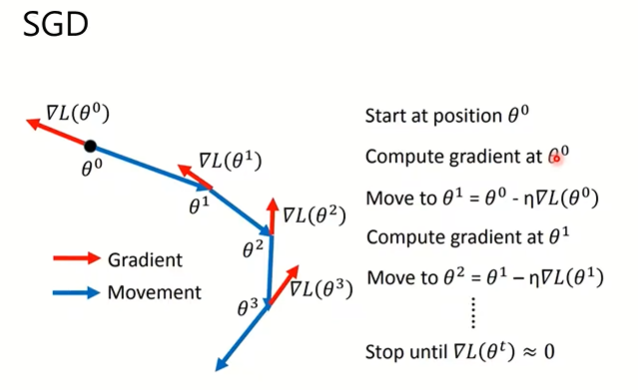
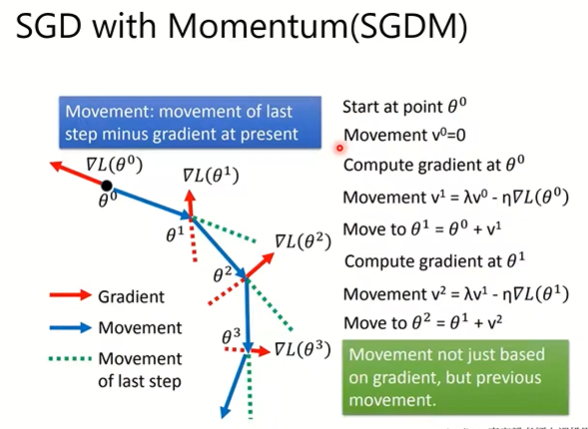
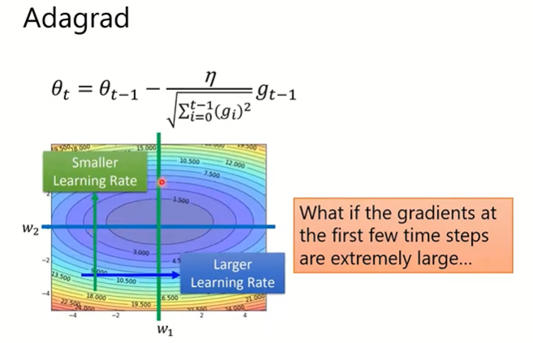
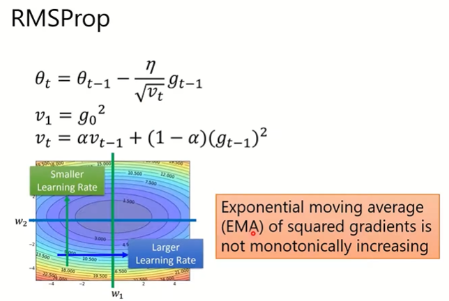
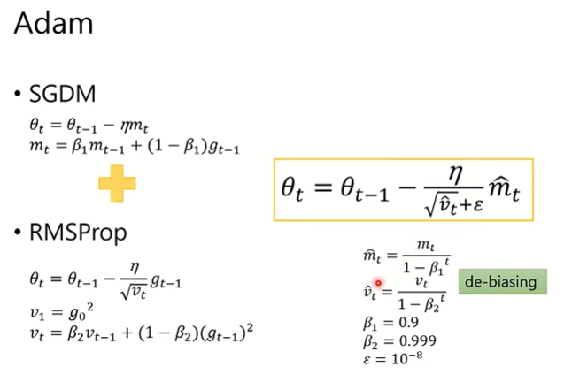
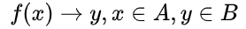

常用参数及释义
偏差与方差
- 偏差(bias):模型的预测值与实际值之间的偏离关系----模型欠拟合,模型拟合越好,则预测平均值与实际值越接近。
- 方差(variance):训练集准确率和验证集准确率偏离关系----模型过拟合,过拟合模型往往偏差较低,但方差大,导致验证集准确率变低。
- 高偏差：扩大网络结构、延长训练时间、更换模型结构(简单的模型可能并不能涵盖实际值)。
- 高方差：增大训练集、正则化、更换模型结构(降低过拟合)。
Classic Optimization
- SGD:随机梯度下降,对每一个sample求导计算梯度,loss下降速度比全sample快,但不稳定,一般用折中mini-batch,取mini-batch个sample进行一次gradient descent。

- SGDM:即SGD+Montentum,SGD的局部次优解或鞍点问题,loss下降速度受当前梯度影响,因此在梯度较小处下降较慢,故增加之前梯度动量影响,保证下降速率。

- Adagrad:自适应步长,历史梯度平方和的平方根,AdaGrad能够自动为不同参数适应不同的学习率(平方根的分母项相当于对学习率α进进行了自动调整,然后再乘以本次梯度),但随之时间步地增加,分母项越来越大,最终导致学习率收缩到太小无法进行有效更新。

- RMSProp:对Adagrad进行优化,随时间增加,降低历史动量的影响。

- Adam:结合了RMSProp以及SGDM,兼具速度与稳定性。

- Adam虽然在gradient descent有较好表现,但最后收敛过程没有SGDM稳定,结合两者的SWATS先Adam快速下降,在SGDM收敛,但在何时切换仍未证明,其次还有对SGDM进行增速以及对Adam后期稳定增强的多种Optimization可供选择,不一一赘述。
正则化
- l1正则化(加在costfunction后)：λ/2m ‖w‖₁ L1正则化可以产生稀疏权值矩阵,即产生一个稀疏模型,可以用于特征选择。一定程度上,L1也可以防止过拟合。
- l2正则化(加在costfunction后)：λ/2m ‖w‖₂² L2正则化可以防止模型过拟合(overfitting)。λ↑ w↓(相当于降低很多隐藏单元权重) z↓ z范围小则在激活函数上接近线性,模型也贴近线性模型,过拟合度降低。
- dropout正则化：随机神经元消失本质简化网络。阻止了某些特征仅仅在其它特定特征下才有效果的情况,减少神经元之间复杂的共适应性。
归一化处理
- 归一化(零均值化+标准化):提升训练速度(要求数据近似高斯分布),数据归一化后,最优解的寻优过程明显会变得平缓,更容易正确的收敛到最优解。
- 零均值化：u = 1/m∑x(i) x = x-u
- 标准化：σ² = 1/m∑x(i)**2 x /= √σ²
- Batch Normalization：对每一层输入进行归一化处理,BN层让损失函数更平滑,更有利于梯度下降,每一隐藏层数值波动很大,通过归一化减小波动,这样使得后一层拥有一定独立性,不会因输入变化过大而加大训练难度,加速训练。
Regression and classification
- 如何区分类与回归,看的不是输入,而是输出的连续与否。回归问题与分类问题本质上都是要建立映射关系：
- 对于回归问题,其输出空间B是一个度量空间,即所谓“定量”。也就是说,回归问题的输出空间定义了一个度量distance = f(ytrue,ypredict)去衡量输出值与真实值之间的“误差大小”。例如：预测一瓶700毫升的可乐的价格(真实价格为5元)为6元时,误差为1；预测其为7元时,误差为2。这两个预测结果是不一样的,是有度量定义来衡量这种“不一样”的。(于是有了均方误差这类误差函数)。
- 对于分类问题,其输出空间B不是度量空间,即所谓“定性”。也就是说,在分类问题中,只有分类“正确”与“错误”之分,至于错误时是将Class 5分到Class 6,还是Class 7,并没有区别,都是在error counter上+1。
